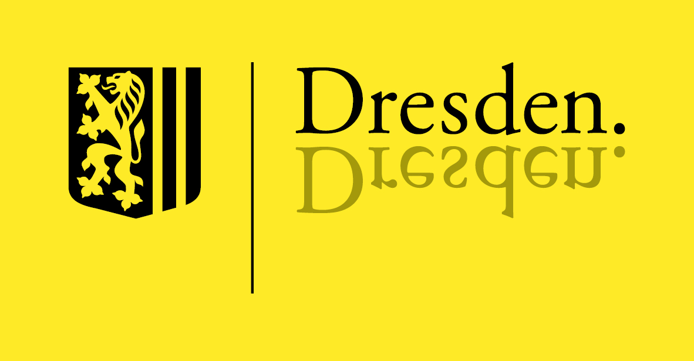

JUNGES RADIO "coloRadio"
Liebe MultiplikatorInnen und ErzieherInnen,
seit März 2006 gibt es in Dresden bei der "Radioinitiative Dresden e.V." ein richtiges Kinder-und Jugendradio. Das JUNGE RADIO ist ein medienpädagogisches Angebot für Menschen ab 6 Jahren.
Kinder und Jugendliche bekommen die Chance, das Medium Radio kennen zu lernen und selbständig eigene Hörfunkbeiträge oder ganze Sendungen zu produzieren. Jeden Sonntag von 15.00-16.00 Uhr geht das JUNGE RADIO auf den Frequenzen 98,4 MHz und 99,3 MHz in Dresden auf Sendung.
Warum gibt es das "JUNGE RADIO"?
Medien spielen in der heutigen Gesellschaft eine immer größere Rolle. Fernseher und Radio laufen nahezu ununterbrochen. Der dadurch ausgeübte Einfluss ist immens. Besonders Kinder und Jugendliche sind diesen Reizen ausgesetzt, ohne sich der Wirkung bewusst zu sein. Da davon auszugehen ist, dass die Präsenz der Medien sich noch verstärken wird, ist eine Vermittlung von Medienkompetenz unverzichtbar. Nur so haben Kinder und Jugendliche eine Chance, sich kritisch mit ihrer Umwelt auseinander zu setzen und selbstbestimmte Entscheidungen zu treffen.
Was will das "JUNGE RADIO"?
Die Ziele vom JUNGEN RADIO sind die Kompetenzvermittlung zum aktiven und selbstbewusstem Umgang mit Medien, die Aktivierung zu bewusster Wahrnehmung der eigenen Umwelt sowie die Verortung gesellschaftlicher (und meist medienvermittelter) Werte. Darüber hinaus erfahren die jungen Menschen durch die Mitarbeit im Radioteam ihr kreatives Potential. Das Erlebnis, „echtes“ Radio zu machen und Menschen über den unmittelbar erlebbaren Raum hinaus zu erreichen, stärkt das Selbstbewusstsein.
Die Kinder und Jugendliche lernen in der Gruppe, sich deutlich zu artikulieren, ihre Wünsche zu formulieren und ihre Meinung zu begründen. Die sozialen Kompetenzen werden dadurch bewusst erlebt und durch die Arbeit in der Gruppe erweitert.
Wie komme ich zum JUNGEN RADIO?
Wir sind zu erreichen unter:Telefon: 0351/ 85074510
eMail: buero@coloradio.org
Wer Lust hat, beim "JUNGEN RADIO" mitzumachen, kann sich telefonisch bei uns melden oder uns einfach eine Mail schreiben. AnsprechpartnerInnen sind Jana Winter und Susanne Winkel. Auch Schulklassen haben die Möglichkeit, bei uns ihre Projekttage mit der Produktion einer themenspezifischen Sendung, eines Hörspiels oder eines Abendgrußes zu gestalten. In unseren Räumen auf der Riesaer Straße 32 im Zentralwerk Dresden können sie auch montags bis freitags von 14.00-18.00 Uhr Aufnahmegeräte ausleihen.
Kommt vorbei - wir freuen uns auf auf Euch,
Jana und Susi
Das "JUNGE RADIO" wird gefördert durch 
die Landeshauptstadt Dresden